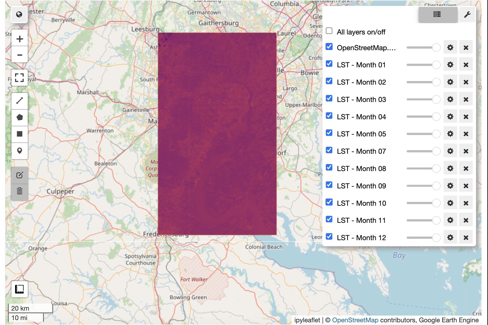
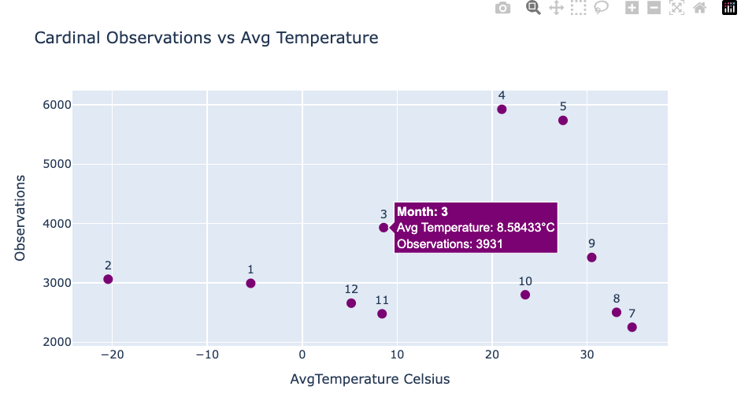

Tutorial using Google Earth Engine with GBIF mediated occurrences
In this tutorial, we explored how to integrate remote sensing data with biodiversity observations to analyze the relationships between environmental factors and species occurrences. Specifically, we focused on analyzing Land Surface Temperature (LST) over time and its relationship to observations of the Northern Cardinal (Cardinalis cardinalis), a well-known songbird species.
Objectives
- Land Surface Temperature (LST) Analysis
We used remote sensing data from the Landsat 8 satellite to compute monthly averages of LST across a defined region of interest (ROI). The tutorial demonstrated how to:
- Query LST data using Google Earth Engine (GEE) for specific months in 2019.
- Aggregate LST data to calculate monthly average temperatures.
- Species Observation Time Series Using occurrence data for Cardinalis cardinalis from the Global Biodiversity Information Facility (GBIF), the tutorial guided users through:
- Fetching observation records using spatial and temporal filters (e.g., only human observations from 2019).
- Preprocessing these records to extract relevant metadata, such as the month of observation and geographical coordinates.
- Combining Datasets for Time-Series Analysis The LST data and Cardinalis cardinalis observation records were combined into a single dataset to enable time-series analysis. Key steps included:
- Summarizing monthly observation counts.
- Merging these counts with monthly average temperatures for the same region.
- Data Visualization The final step was visualizing the relationships between temperature and bird observations through:
- Scatter plots highlighting correlations between average monthly temperature and the number of Cardinalis cardinalis observations.
Insights and Applications
This tutorial demonstrates a practical workflow for integrating remote sensing and biodiversity data, offering a framework for analyzing species-environment interactions over time. It highlights how:
- LST data can serve as a proxy for environmental conditions affecting species behavior and distribution.
- Temporal trends in species observations can reveal seasonal or climatic influences.
- Integrating geospatial and temporal datasets provides a powerful approach to ecological research.
Tools and Libraries Used
- Google Earth Engine (GEE): For querying and processing LST imagery.
- GBIF API: To fetch species occurrence data filtered by time, location, and observation method.
Python Libraries:
pandasandgeopandasfor data manipulation.matplotlibandplotlyfor visualization.shapelyfor spatial operations.
Feel to reach out to krle4401@colorado.edu with questions and make the subject something like “GBIF LST Tutorial Questions”
Step One: Import Libraries and Initialize Google Earth Engine
# Required Libraries
import ee
import geemap
import geemap.colormaps as cm
from pygbif import occurrences as gbif_occ
from shapely.geometry import Point
import geopandas as gpd
import matplotlib.pyplot as plt
import pandas as pd
import ipywidgets as widgets # Import ipywidgets
# Initialize Earth Engine
ee.Authenticate()
ee.Initialize(project="ee-krle4401")
Step Two: Set a ROI (Region of Interest), Fetch Landsat Imagery with the Thermal Band, and Inspect Cloud Coverage
# ROI: DC/Virginia area
roi = ee.Geometry.Polygon(
[[[-77.5, 38.3], [-77.5, 39.1], [-76.9, 39.1], [-76.9, 38.3], [-77.5, 38.3]]]
)
# Function to fetch monthly LST and count images
def get_landsat_lst(month):
start_date = f"2019-{month:02d}-01"
end_date = f"2019-{month:02d}-{31 if month in [1, 3, 5, 7, 8, 10, 12] else (30 if month != 2 else 28)}"
collection = (
ee.ImageCollection("LANDSAT/LC08/C02/T1_L2")
.filterBounds(roi)
.filterDate(start_date, end_date)
.filter(ee.Filter.lt("CLOUD_COVER", 40))
)
image_count = collection.size().getInfo()
if image_count == 0:
print(f"No images available for {start_date} to {end_date}")
return None, image_count
print(f"{image_count} images available for {start_date} to {end_date}")
lst = collection.map(lambda img: img.select("ST_B10").multiply(0.00341802).add(149).subtract(273.15))
return lst.mean().clip(roi), image_count
# Fetch LST images and log image counts
lst_monthly = {}
image_counts = {}
for month in range(1, 13):
lst, count = get_landsat_lst(month)
if lst:
lst_monthly[month] = lst
image_counts[month] = count
# Visualize the image counts as a bar chart
months = list(image_counts.keys())
counts = list(image_counts.values())
plt.bar(months, counts, color="skyblue")
plt.xlabel("Month")
plt.ylabel("Number of Images")
plt.title("Landsat Images per Month (2019)")
plt.xticks(months)
plt.show()
.png)
If you wanted to pull everything, use the below, but make sure you have a lot of time!
Step Three: Let’s look at records over the year of Cardinalis cardinalis
from pygbif import occurrences as gbif_occ
import geopandas as gpd
from shapely.geometry import Point, Polygon
import pandas as pd
# Define bounding box coordinates for ROI
bounding_box_coords = [
(-77.5, 38.3), # Bottom-left
(-76.9, 38.3), # Bottom-right
(-76.9, 39.1), # Top-right
(-77.5, 39.1), # Top-left
(-77.5, 38.3), # Close the polygon
]
# Create a polygon from the bounding box
bounding_polygon = Polygon(bounding_box_coords)
# Iterate through each month
for month in range(1, 2):
# Define a unique output CSV file for each month
output_csv = f"cardinalis_cardinalis_2019_month_{month:02d}.csv"
# Create the CSV file with headers for this month
pd.DataFrame(columns=["species", "kingdom", "basisOfRecord", "latitude", "longitude", "date_collected"]).to_csv(
output_csv, index=False
)
print(f"Fetching data for month {month:02d}...")
# Pagination variables
limit = 300
offset = 0
while True:
# Query GBIF API for Cardinalis cardinalis for the specific month
response = gbif_occ.search(
geometry=bounding_polygon.wkt,
hasCoordinate=True,
basisOfRecord="HUMAN_OBSERVATION",
year=2019,
month=month,
scientificName="Cardinalis cardinalis", # Filter for Cardinalis cardinalis
limit=limit,
offset=offset
)
# Extract results
results = response.get("results", [])
if not results:
break
# Process records
batch_records = []
for occ in results:
try:
# Extract required fields
latitude = float(occ["decimalLatitude"])
longitude = float(occ["decimalLongitude"])
event_date = occ.get("eventDate", "Unknown Date")
species = occ.get("species", "Unknown")
kingdom = occ.get("kingdom", "Unknown")
basis_of_record = occ.get("basisOfRecord", "Unknown")
# Check if the point is inside the bounding polygon
point = Point(longitude, latitude)
if bounding_polygon.contains(point):
batch_records.append({
"species": species,
"kingdom": kingdom,
"basisOfRecord": basis_of_record,
"latitude": latitude,
"longitude": longitude,
"date_collected": event_date,
})
except (KeyError, TypeError, ValueError):
# Skip malformed records
continue
# Append batch to the month's CSV
if batch_records:
pd.DataFrame(batch_records).to_csv(output_csv, mode="a", index=False, header=False)
# Update offset for next batch
offset += limit
print(f"Fetched {len(results)} records so far for month {month:02d}, offset: {offset}")
print(f"Data for month {month:02d} saved to {output_csv}")
print("Data fetching complete!")
import geemap
# Initialize geemap.Map for LST data
map_lst = geemap.Map(center=[38.7, -77.2], zoom=8)
# Add LST layers for months with data
palette = cm.palettes.inferno
for month, img in lst_monthly.items():
print(f"Adding LST layer for month {month}")
map_lst.addLayer(img, {"min": -20, "max": 40, "palette": palette}, f"LST - Month {month:02d}")
# Save the LST map to an HTML file
output_html_lst = "lst_data_map.html"
map_lst.save(output_html_lst)
map_lst

import pandas as pd
import geopandas as gpd
from shapely.geometry import Point
from glob import glob
import geemap
from dateutil import parser
# Function to safely parse dates and extract the month
def parse_date_and_get_month(date_str):
try:
return parser.parse(date_str).month # Use dateutil.parser to handle mixed formats
except (ValueError, TypeError):
return None # Return None for invalid dates
# Initialize geemap.Map
map_combined = geemap.Map(center=[38.7, -77.2], zoom=8)
# Add LST layers for months with data
palette = cm.palettes.inferno
for month, img in lst_monthly.items():
print(f"Adding LST layer for month {month}")
map_combined.addLayer(img, {"min": -20, "max": 40, "palette": palette}, f"LST - Month {month:02d}")
# Combine all 12 CSV files into a single DataFrame
csv_files = sorted(glob("cardinalis_cardinalis_2019_month_*.csv")) # Match your CSV files
dfs = [pd.read_csv(csv_file) for csv_file in csv_files] # Use pandas to read CSVs
combined_df = pd.concat(dfs, ignore_index=True) # Combine all DataFrames
# Parse 'date_collected' to extract the month
combined_df["month"] = combined_df["date_collected"].apply(parse_date_and_get_month)
# Drop rows with invalid months
combined_df = combined_df.dropna(subset=["month"])
# Select the first 30 records for each month
selected_df = combined_df.groupby("month").head(30).reset_index(drop=True)
# Convert the selected DataFrame into a GeoDataFrame
selected_gdf = gpd.GeoDataFrame(
selected_df,
geometry=gpd.points_from_xy(selected_df["longitude"], selected_df["latitude"]),
crs="EPSG:4326"
)
# Add the selected GeoDataFrame as a single layer on the map
map_combined.add_gdf(selected_gdf, layer_name="Selected Cardinal Observations")
# Display the map in the notebook (if using Jupyter)
map_combined
import pandas as pd
import geopandas as gpd
from shapely.geometry import Point
from glob import glob
import plotly.express as px
# Combine all 12 CSV files into a single DataFrame
csv_files = sorted(glob("cardinalis_cardinalis_2019_month_*.csv")) # Match your CSV files
dfs = [pd.read_csv(csv_file) for csv_file in csv_files]
combined_df = pd.concat(dfs, ignore_index=True)
# Convert 'date_collected' to datetime with mixed format handling
combined_df["date_collected"] = pd.to_datetime(combined_df["date_collected"], errors="coerce", utc=True)
# Extract the month from valid dates
combined_df["month"] = combined_df["date_collected"].dt.month
# Drop rows with invalid dates (if necessary)
combined_df = combined_df.dropna(subset=["month"])
# Summarize GBIF Observations by Month
monthly_observations = combined_df["month"].value_counts().sort_index()
# Assuming `lst_monthly` contains precomputed LST images
# Step 2: Compute Average Temperature for Each Month
monthly_avg_temp = {}
for month, img in lst_monthly.items():
mean_temp = img.reduceRegion(
reducer=ee.Reducer.mean(),
geometry=roi,
scale=30,
bestEffort=True
).getInfo()
monthly_avg_temp[month] = mean_temp.get("ST_B10", None)
# Step 3: Combine Observations and Temperature into a DataFrame
data = pd.DataFrame({
"Month": range(1, 13),
"Observations": monthly_observations.reindex(range(1, 13), fill_value=0),
"AvgTemperature Celsius": [monthly_avg_temp.get(m, None) for m in range(1, 13)],
})
# Display the combined DataFrame
print(data)
# Step 4: Scatter Plot with Hover Tooltip
fig = px.scatter(
data,
x="AvgTemperature Celsius",
y="Observations",
text="Month",
labels={"x": "Avg Temperature (°C)", "y": "Number of Observations"},
title="Cardinal Observations vs Avg Temperature",
template="plotly",
)
# Add hover info to display the month
fig.update_traces(
marker=dict(size=10, color="purple"),
textposition="top center",
hovertemplate="<b>Month: %{text}</b><br>Avg Temperature: %{x}°C<br>Observations: %{y}<extra></extra>"
)
fig.show()
# Save the DataFrame for further inspection
data.to_csv("observations_vs_temperature.csv", index=False)
